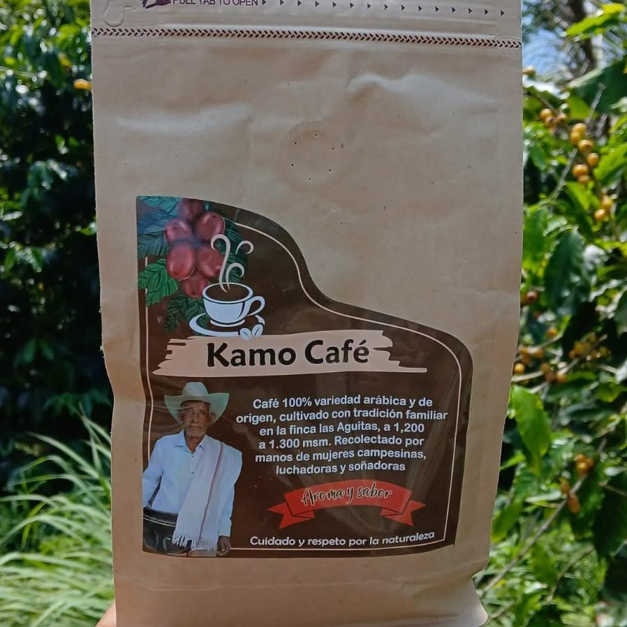
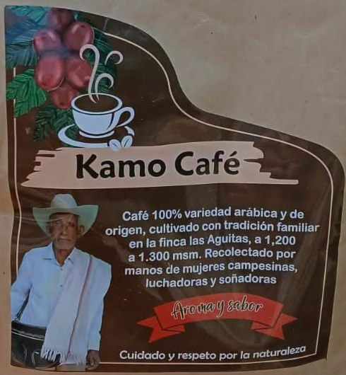

Kamo Café es 100% arábica, cultivado por la familia de don Antonio en la finca Las Agüitas, entre 1.200 y 1.300 metros sobre el nivel del mar, y recolectado a mano por mujeres campesinas.


Aroma y sabor. Cuidado y respeto por la naturaleza.
En la vereda Las Agüitas de Ituango, muy cerca de la zona de Hidroituango, una familia campesina mantiene viva la tradición cafetera que heredó de don Antonio.
El grano lo recogen manos de mujeres campesinas, luchadoras y soñadoras. Comprar Kamo Café es apoyar directamente a una familia del campo antioqueño, sin intermediarios grandes de por medio.
Además del café, el emprendimiento trabaja cacao artesanal de la misma tierra.
Café arábica sembrado en la finca Las Agüitas, a más de 1.200 metros de altura.
Grano a grano, solo el maduro, por mujeres campesinas de la vereda.
Proceso cuidadoso en finca, con respeto por el agua y la naturaleza.
Empacado en bolsa kraft con válvula y cierre, listo para despachar.
Despachos a todo el país. El flete se acuerda por WhatsApp según tu ciudad.
Un café con nombre, finca y vereda. Así se sabe exactamente qué te estás tomando.
Escríbenos por WhatsApp, te confirmamos precio, disponibilidad y flete a tu ciudad.